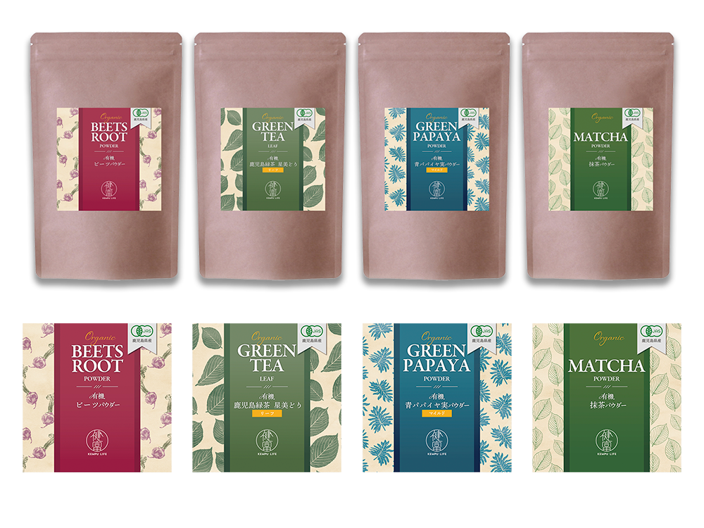

新商品のスーパーフード
ラベルデザイン
パッケージデザイン（コンペ作品）

- 概要
-
新しくECサイトで販売される４種類のスーパーフードの商品パッケージデザインのコンペに出す為、作成しました。
- ターゲット層
- 健康や環境に関心が高い30-60代の男女
- 目的・ゴール
- 新規顧客の拡大、リピート購入の促進
- コンセプト
- 自然本来の力を借りて、自分の健康を引き出す
- 制作ポイント
-
- 生産方法のこだわり: 製品の原材料を背景イラストに描くことで、商品の中身を視覚的に伝えると同時に、原材料へのこだわりを強調しました。
-
日常生活への溶け込み: 日本ではまだ馴染みの少ないスーパーフードですが、日常生活に取り入れやすく、お客様の健康をサポートするという思いを込めデザインしました。
スーパーフードは食品と健康食品の間の立場とのことでしたので、高級感や特別感を兼ね備えながらも、手書き感のあるフォントやイラストを取り入れることで、日常に溶け込み日頃より愛用していただけるよう思いを込めました。 - 文字の流れ: 「有機」の文字は、企業コンセプトである「健康をデザインする」をイメージし、長期にわたる健康をイメージするために流れるようなフォントに仕上げました。
- 環境への配慮: ビニールの代わりにクラフト紙のパッケージを選択することで、スーパーフードをより身近で環境にやさしいものとして位置づけ、お客様に気軽に取り入れていただけるよう考慮しました。
- 通販サイトでの購入が主要なチャネルと考え、情報は必要最小限にとどめ、シンプルかつ日常生活になじむようなデザインにしました。
- 制作期間
- 2日間
- 使用ツール
- illustrator